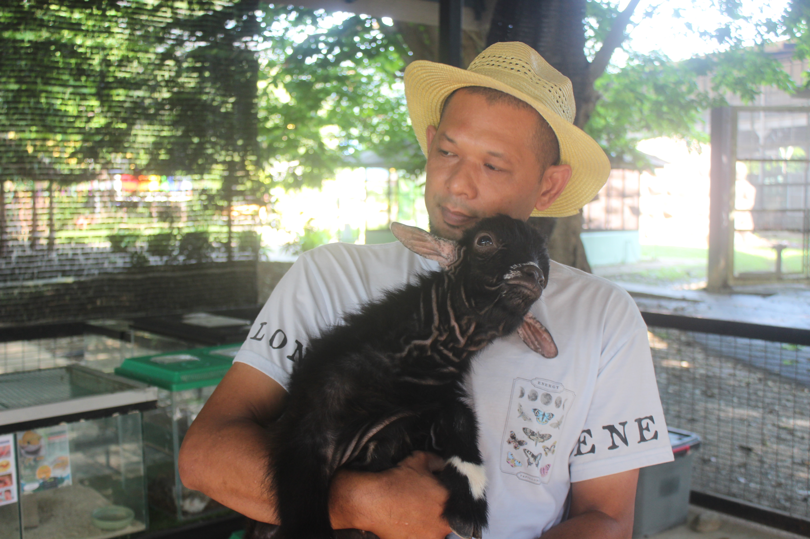
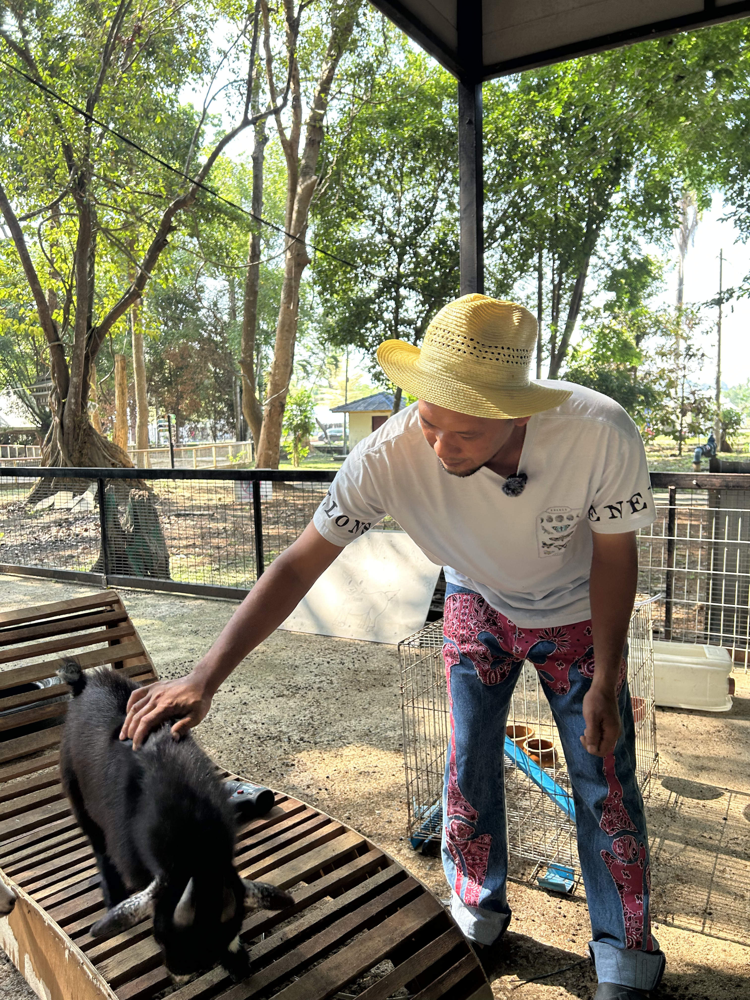
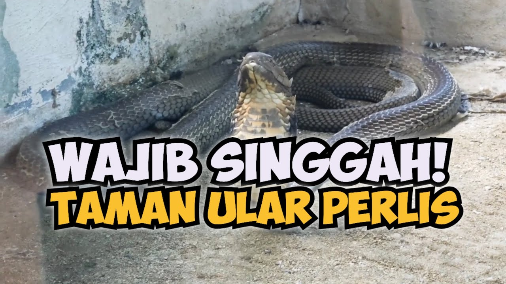
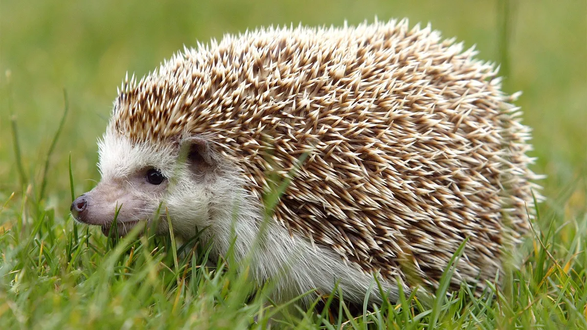
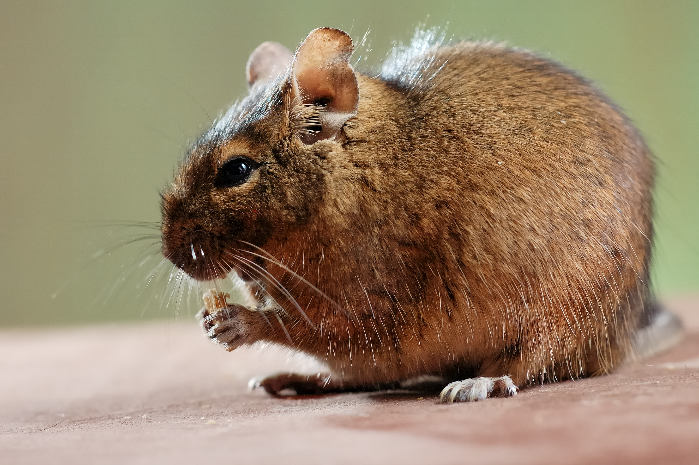

KHAIRUNNIZAM NAYAN



Khairunnizam merupakan individu yang berpengalaman dalam pengurusan, penjagaan serta pengendalian haiwan reptilia dan haiwan petting zoo di Taman Ular Perlis. Beliau memainkan peranan penting dalam memastikan setiap haiwan berada dalam keadaan yang sihat, selamat dan terurus.
Antara rutin harian beliau adalah memastikan kebersihan kawasan penempatan haiwan sentiasa terjaga selain memantau bekalan makanan dan minuman agar berada dalam keadaan mencukupi serta berkualiti. Pemeriksaan kesihatan asas terhadap haiwan juga dilakukan secara berkala bagi memastikan haiwan berada dalam keadaan aktif dan tidak mengalami tekanan.
Selain itu, beliau turut bertanggungjawab mengurus haiwan-haiwan petting zoo yang kebanyakannya diimport dari luar negara. Oleh sebab itu, hubungan yang baik antara penjaga dan haiwan amat penting bagi membantu haiwan menyesuaikan diri dengan persekitaran baharu serta mengurangkan tekanan terhadap haiwan tersebut.
Dengan kemahiran komunikasi yang baik serta minat mendalam terhadap dunia reptilia dan haiwan eksotik, Khairunnizam sering berkongsi ilmu berkaitan konservasi haiwan kepada para pengunjung. Dedikasi dan komitmen beliau membantu menjadikan Taman Ular Perlis sebagai pusat pendidikan, konservasi dan tarikan pelancongan yang dihormati ramai.






